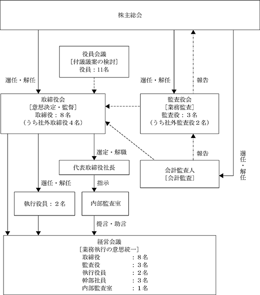

該当事項はありません。
該当事項はありません。
③ 【その他の新株予約権等の状況】
該当事項はありません。
該当事項はありません。
(注) 2018年３月16日開催の第60回定時株主総会の決議により、同年６月21日をもって10株を１株とする株式併合を実施したため、発行済株式総数は、4,608,630株減少し、512,070株となっております。また2018年２月２日開催の取締役会決議により、同年６月21日をもって、単元株式数を1,000株から100株へ変更しております。
2023年12月20日現在
(注) 自己株式3,162株は、「個人その他」の欄に31単元、「単元未満株式の状況」の欄に62株を含めて記載しております。
2023年12月20日現在
(注) 前事業年度末現在主要株主でありました有限会社パックス・ケイは、当事業年度末では主要株主ではなくなり、株式会社フロンティアグループが主要株主となっております。
2023年12月20日現在
(注) 「単元未満株式」の「株式数」の欄には、当社保有の自己株式62株が含まれております。
2023年12月20日現在
該当事項はありません。
該当事項はありません。
(注) 当期間における取得自己株式には、2024年３月１日から有価証券報告書提出日までの単元未満株式の買取り
による株式数は含めておりません。
(注) 当期間における保有自己株式数には、2024年３月１日から有価証券報告書提出日までの単元未満株式の買取りによる株式数は含めておりません。
当社の配当政策の基本方針は、株主への長期的な利益還元を重要と考え、安定かつ充実した配当を行うことを基本とし、配当性向の向上に努める一方、企業体質強化のため、内部留保を充実させることにあります。
この基本方針に基づき、当期の配当につきましては、１株当たり106円(うち中間配当53円)といたしました。
内部留保金につきましては、販売体制を強化するため、営業設備の整備、充実に有効に使用していく所存であります。
なお、当社の剰余金の配当につきましては、会社法第454条第５項に規定する取締役会決議による中間配当及び会社法第454条第１項に規定する株主総会決議による期末配当の年２回配当を行うことができる旨を定款に定めております。
(注) 基準日が当事業年度に属する剰余金の配当は、以下のとおりであります。
当社は、法令の遵守に基づく企業倫理の重要性を認識し、かつ経営の健全性向上を図り、株主価値を重視した経営を展開すべきものと考えており、また企業競争力強化の観点から、経営判断の迅速化を図ると同時に、経営チェック機能の充実に主眼を置いた経営を目標にしております。そのために当社は、取締役会、監査役会を軸にコーポレート・ガバナンスの充実を図っております。経営体制としては、執行役員制度を導入しております。目的は業務執行機能を強化するためで執行役員は直属の取締役の職務を助け、業績向上に努めることに責任を持つものであります。また社外取締役を選任することにより、客観性、中立的、公正性に基づいた立場から異なった視点での提言をいただくとともに、経営の透明性の確保及びコーポレート・ガバナンスの一層の強化を図っております。
ホームページの充実や月次業績の開示等、経営の透明性の向上に向けて、株主に対する情報開示の強化に取り組むとともに、ＩＲ活動を通じて得た意見やアドバイス等は、取締役会等を通して経営にフィードバックさせております。
② 企業統治の体制の概要及び体制を採用する理由
当社は、監査役制度を採用しており、有価証券報告書提出日（2024年３月18日）現在、取締役８名（うち社外取締役４名）、監査役３名（うち社外監査役２名）という経営体制になっております。
取締役会は、全社基本方針の決定や高度な経営判断、業務執行の監督を行う機関として位置づけ、十分な独立性を有する社外取締役４名を選任することで、取締役に対する実効性の高い監督体制を構築し、経営の透明性・公正性を確保しております。企業戦略など大きな方向性を示し、重要な経営資源の配分について決定することを取締役会の役割・責務としており、経営戦略・経営計画について、年度計画は期初に、中期計画は策定過程に、取締役会で議論することとしております。また当社の事業推進にあたり重要な経営課題が発生した場合は、その都度速やかな議論と対処を行っております。原則月１回を基本として開催し、必要に応じて随時取締役会を開催しております。監査役は常勤・非常勤を問わず、全員が原則として毎回取締役会に出席することとしており、取締役の職務執行を監督しております。なお、取締役会の議長は、代表取締役笠井庄治が務めており、その他の構成員は取締役髙野裕一、取締役笠井信剛、取締役矢野浩司、社外取締役櫻井三樹子、社外取締役北山恵理子、社外取締役山形秀樹、社外取締役金子嘉德であります。
業務執行体制としては、継続的な企業価値向上には経営の透明性・公正性を高めること及び迅速な意思決定を追求することが重要であると考え、監督機能（取締役）と業務執行機能（執行役員）の分離を行うことを目的とした執行役員制度を導入しております。また「迅速かつ的確な経営及び執行判断」を補完する機関として、経営会議を月１回開催し、経営課題の検討や報告、また社内全体の意見統一を図っております。なお、経営会議の議長は、代表取締役笠井庄治が務めております。またその他の構成員は、取締役髙野裕一、取締役笠井信剛、取締役矢野浩司、社外取締役櫻井三樹子、社外取締役北山恵理子、社外取締役山形秀樹、社外取締役金子嘉德及び執行役員、代表取締役が会議の進行のために必要と認めた各部門の責任ある立場にある従業員であります。
監査役会は、原則月１回を基本として開催し、必要に応じて随時監査役会を開催しております。監査役は、取締役会や社内の重要な会議に出席し、適宜に監査役としての意見提議を行っており、取締役を含め、従業員からの重要事項の報告収受等により業務執行状況を監視しております。また外部会計監査人の監査報告、往査立会等を通じて、監査実施内容を把握しており、会計監査人の評価及び選定基準策定に関する監査役等の実務指針等を参照して、品質管理システム、監査体制、監査の適切性などの項目を勘案した基準に基づき、毎期監査役会審議の中で評価及び再任の決議を行っており、外部会計監査人の独立性、専門性についても毎期確認しております。さらに会計監査や四半期レビューの報告等を通じ、外部会計監査人との連携を確保し、常勤監査役を中心に内部監査室と随時必要な情報交換や業務執行状況の確認等を行い、密な連携を通じて、その実効性を高めるよう努めております。
ロ．企業統治の体制を採用する理由
取締役の善管注意義務及び忠実義務を果たすとともに、著しく変化する経営環境に柔軟かつ慎重に対応するために、意思決定機能の充実、リスクマネジメントの強化、コンプライアンスの強化等が図れる体制として、現状の事業及び人員規模に照らし、最適なものであると判断したためであります。また社外取締役においては経営に対する客観性及び中立性、独立性が確保されていること、社外監査役においては経営監視機能の客観性及び中立性、独立性が確保されていることにより、社外役員６名がそれぞれ専門性と経験等を活かして会社の経営に対して監視・助言等をできる、十分なコーポレート・ガバナンス体制を構築できると考えております。
当社のコーポレート・ガバナンスの状況は下図のとおりであります。

イ．内部統制システムの整備状況
当社は、取締役の職務執行が法令及び定款に適合することを確保するための体制、その他業務の適正を確保するための内部統制システムについて、整備・向上に努めております。
（内部統制システム構築の基本方針）
当社は、社会的に存在価値のある企業として健全な体力を付け、シューズ専門商社として生活文化に貢献していくという基本精神のもと、社会から信頼を得ることの重要性を認識し、適法・適正かつ効率的な事業活動を遂行するために、会社法及び会社法施行規則に基づき、「業務の適正を確保するための体制」を以下のとおり定めております。
ａ．取締役及び使用人の職務の執行が法令及び定款に適合することを確保するための体制
・取締役は、毎月開催の取締役会、情報共有の推進を通じて、他の取締役の職務執行の監督を
行う。
・当社は、監査役会設置会社であり、各監査役は監査役会が定めた監査方針のもと、独立した
立場から内部システムの整備、運用状況を含め、取締役の職務執行の監査を行う。
・代表取締役社長は、管理本部担当取締役をコンプライアンス全体に関する総括責任者として
任命し、コンプライアンス体制の構築、維持及び整備を行う。
・内部監査室は、業務執行部門から独立し、当社における業務の適正性及び効率性につき監視
を行う。
・内部監査部門として、代表取締役社長直轄の内部監査室を補強し、社内各部署の業務につい
て各種法令、各種規程等の遵守状況を計画的に監査する。
・当社は法令違反行為等に対して、従業員から社外（弁護士事務所）に匿名でも相談・申告で
きる「内部通報制度」を設け、申告者が不利益な扱いを受けない体制を整備する。
ｂ．取締役の職務の執行に係る情報の保存及び管理に関する体制
・株主総会、取締役会の議事録、経営及び業務執行に係る重要な情報については、法令及び「
文書取扱規程」、「稟議規程」等の関連規程に従い、適切に記録し、定められた期間保存す
る。
・「文書取扱規程」、「稟議規程」他関連規程は、必要に応じて適時見直し、改善を図る。
ｃ．損失の危険の管理に関する規程その他の体制
・取締役会及びその他の重要な会議において、各取締役、経営幹部及び使用人は、業務執行に
係る重要な情報の報告を行う。
・代表取締役社長は、経営企画担当取締役をリスク管理の総括責任者として任命し、各担当取
締役と連携しながら、リスクを最小限に抑える体制を整備する。
・災害等の不測の事態が発生した場合には、管理本部長が統轄する対策本部を設置し、迅速か
つ適切な対応策を講じる。
ｄ．取締役の職務の執行が効率的に行われることを確保するための体制
・取締役会は、当社の規定等に鑑み、機動性を重視した体制とし、毎月開催の取締役会におい
て重要事項の決定及び取締役の職務執行の監督を行う。
・経営会議を毎月開催し、チーム別予算の執行状況及び差異分析の結果に基づく、迅速かつ
的確な意思決定を行う。
・執行役員制度の導入により業務執行機能を強化し、取締役及び執行役員による役員会議を開
催し、取締役会付議議案の検討や情報の共有化等、意思の疎通に重点を置く。
・取締役会の決定に基づく業務執行については、組織体制、権限、業務分掌を社内規程等にお
いて明確にし、効率的な執行体制を整備する。
ｅ．当社及び子会社から成る企業集団における業務の適正を確保するための体制
・当社及び子会社における情報の共有化、指示の伝達等が効率的に行われる体制を構築すると
ともに、適切な管理を行う。
・内部監査部門（内部監査室及び経理部）は、海外を含めた子会社の監査を実施し、監査結果
を取締役会及び監査役会に報告する。また、子会社のリスク管理状況やコンプライアンス活
動状況の評価を行い、必要に応じて助言、改善提案等を行う。
・当社は、子会社に対し、必要の都度、会計監査及び業務監査を行うものとし、管理本部長が
これを指揮する。
ｆ．監査役が職務を補助すべき使用人を置くことを求めた場合における当該使用人に関する体制並び
にその使用人の取締役からの独立性に関する事項
・当社は、監査役の職務を補助する使用人は配置していないが、取締役会は監査役会と必要に
応じて協議を行い、当該使用人を任命及び配置することができる。
・監査役が指定する補助すべき期間中は、取締役の指揮命令は受けない。
ｇ．取締役及び使用人が監査役に報告するための体制、その他の監査役への報告に関する体制
・監査役が、取締役会の他重要な会議へ出席するとともに関係書類の閲覧を行える体制を整備
する。
・当社及び子会社の取締役及び使用人は、当社に著しい損害を及ぼす恐れのある事項及び不正
行為や重要な法令並びに定款違反行為を認知した場合の他取締役会に付議する重要な事項と
重要な決定事項、その他重要な会議の決定事項、重要な会計方針、会計基準及びその変更、
内部監査の実施状況、その他必要な重要事項を監査役に報告する。
ｈ．監査役の職務執行に生ずる費用の前払又は償還の手続き、その他の当該職務の執行について生ず
る費用又は債務の処理に係る方針に関する事項
・監査役からその職務の執行について生ずる費用の前払又は償還等の請求を受けたときは、速
やかに当該請求に応じる。
ｉ．監査役への報告をした者が当該報告をしたことを理由として不利な扱いを受けないことを確保す
るための体制
・内部通報制度運用規程により役員及び社員等は、本規程に基づく違反行為等の通報が行われ
たことを理由として、通報者に対し、降格、減給、その他不利益な扱いを受けない。
ｊ．その他監査役の監査が実効的に行われることを確保するための体制
・代表取締役社長は、定期的に監査役と情報交換を行う。
・監査役は、内部監査室及び会計監査人と緊密な連携を保ちながら、監査役監査の実効性の確
保を図る。
・取締役並びに使用人は、法定の事項に加え、内部監査の実施状況を監査役に報告しなければ
ならない。また、内部通報制度による通報状況及び内容、社内不祥事、法令違反事案のうち
重要なものは、監査役に報告しなければならない。
ｋ．財務報告の信頼性と適正性を確保するための体制
当社及び関係会社は、金融商品取引法の定めに従い、良好な統制環境を保持しつつ、全社的な内部統制及び各業務プロセスの統制活動を強化し、適正かつ有効な評価ができるよう内部統制システムを構築し、かつ適正な運用を行うものとする。
・取締役は、組織のすべての活動において最終的な責任を有しており、本基本方針に基づき内
部統制を整備・運用する。
・取締役会は、取締役の内部統制の整備及び運用に対して監督責任を有しており、財務報告と
その内部統制が確実に実行されているか取締役を監視、監督する。
・内部監査室は、内部統制の目的をより効果的に達成するために、内部監査活動を通じ、内部
統制の整備及び運用状況を検討・評価し、必要に応じてその改善策を取締役並びに取締役会
に提言する。
ｌ．反社会的勢力排除に向けた基本的な考え方及びその体制
当社は、「コンプライアンス規程」において「反社会的勢力との関係断絶」を定めており、反社会的勢力に対しては毅然とした態度で対応し、一切関係を持たない旨を行動基準として定めている。
反社会的勢力への対応を所轄する部署を管理本部と定め、毅然とした態度で反社会的勢力との関係を遮断・排除することとする。また警察・弁護士等の外部専門機関との連携を密にし、有事において適切な相談・支援が受けられる体制を整備するとともに、警視庁管内特殊暴力防止対策連合会に加盟し、定期的に行われる情報交換会並びに研修会に参加し、関連情報の収集及び社内への周知徹底を図っている。
ロ．リスク管理体制の整備の状況
当社は、業務上のリスクを網羅的に予見し、適切に評価するとともに会社にとって最小のコストで最良の結果が得られるよう、リスクの回避、軽減及びその他必要な措置を講じることとしております。
内部監査室に業務経験豊富な要員を配置し、社内各部署の業務について売掛金管理、与信額の遵守、仕入管理、発注管理、過剰在庫及び評価減等の準拠状況を計画的に監査しております。またコンプライアンスについては総務部長が担当し、顧問弁護士と連携して対処できる体制をとっており、その他公認会計士、社外有識者の業務執行全般への助言等を受けることで、リスク管理を行っております。
ハ．責任限定契約の内容の概要
当社は、会社法第427条第１項の規定により、社外取締役及び社外監査役との間に、任務を怠ったことによる損害賠償責任を限定する契約を締結することができる旨を定款に定めておりますが、現時点では社外取締役及び社外監査役との間で責任限定契約を締結しておりません。
ニ．取締役及び監査役の責任免除
当社は、取締役及び監査役が職務の遂行にあたり、期待される役割を十分に発揮できるようにするため、会社法第426条第１項の規定により、任務を怠ったことによる取締役（取締役であった者を含む。）、監査役（監査役であった者を含む。）の損害賠償責任を法令の限度において、取締役会の決議によって免除することができる旨を定款に定めております。
ホ．取締役の定数及び取締役選任の決議要件
当社の取締役は11名以内とする旨を定款に定めております。
当社は取締役の選任決議について、株主総会において議決権を行使することができる株主の議決権の３分の１以上を有する株主が出席し、その議決権の過半数をもって行う旨を定款に定めております。また、取締役の選任決議については、累積投票によらないとする旨も定款に定めております。
ヘ．取締役会にて決議することができる株主総会決議事項
ａ．自己株式の取得の決定機関
当社は、経済情勢や経営環境の変化に対応して財務政策等の経営諸施策を機動的に遂行することを可能とするため、会社法第165条第２項の規定に基づき、取締役会の決議により自己の株式を取得することができる旨を定款に定めております。
ｂ．中間配当
当社は、株主への機動的な利益還元を可能にするため、会社法第454条第５項の規定に基づき、取締役会の決議によって、毎年６月20日を基準日として中間配当をすることができる旨を定款に定めております。
ト．株主総会の特別決議要件
当社は、会社法第309条第２項に定める株主総会の特別決議要件について、議決権を行使することができる株主の議決権の３分の１以上を有する株主が出席し、その議決権の３分の２以上をもって行う旨を定款に定めております。これは、株主総会における特別決議の定足数を緩和することにより、株主総会の円滑な運営を行なうことを目的とするものです。
④ 取締役会の活動状況
当事業年度において、当社は定例の取締役会を月１回、決算取締役会を四半期ごとに１回、必要に応じて臨時取締役会をその都度開催しており、個々の取締役の出席状況につきましては次のとおりであります。
(注)当事業年度では取締役会を18回開催したほか、会社法第370条に基づく書面によるみなし決議を１回行っております。
取締役会における具体的な検討内容としましては、取締役会付議、報告事項に関する内規に従い、当社の経営に関する基本方針、重要な業務執行に関する事項、株主総会の決議により授権された事項の他、法令及び定款に定められた事項を決議し、また法令に定められた事項及び重要な業務の執行状況につき報告を受けております。主に新規プロジェクトに関する件、また月度の事業計画実績及び資金繰り、為替の予約等について検討をしております。
① 役員一覧
男性
(注) １ 取締役櫻井三樹子及び北山恵理子、山形秀樹、金子嘉德は、社外取締役であります。なお、各氏は株式会社東京証券取引所の定めに基づく独立役員の要件を満たしており、独立役員として指定し、同取引所に届け出ております。
２ 監査役町田弘香及び玉井哲史は、社外監査役であります。なお、両氏は株式会社東京証券取引所の定めに基づく独立役員の要件を満たしており、独立役員として指定し、同取引所に届け出ております。
３ 2023年３月17日就任後、２年以内の最終の決算期に関する定時株主総会の終結まで。
４ 2024年３月15日就任後、当社の定款の定めにより、他の在任取締役の任期満了する時まで。
５ 2024年３月15日就任後、４年以内の最終の決算期に関する定時株主総会の終結まで。
６ 2023年３月17日就任後、４年以内の最終の決算期に関する定時株主総会の終結まで。
７ 2022年３月17日就任後、４年以内の最終の決算期に関する定時株主総会の終結まで。
８ 取締役笠井信剛は、代表取締役社長笠井庄治の長男であります。
９ 当社は、会社法第430条の３第１項に規定する役員等賠償責任保険契約を締結しており、その被保険者は当社取締役、当社監査役及び当社執行役員であり、すべての被保険者について、その保険料を全額当社が負担しております。
当該保険契約では、被保険者が会社の役員の地位に基づき行った行為（不作為を含む）に起因して、善管注意義務違反・忠実義務違反等を理由に損害賠償請求された場合に、被保険者が被る損害についての損害賠償金や訴訟費用等が補填されることとなっております。ただし、当該保険契約に免責額についての定めを設けており、一定額に至らない損害につきましては補填の対象としないこととしております。また、贈収賄等の犯罪行為や意図的に違法行為を行った役員自身の損害等については補償対象外とすることにより、役員等の職務の適正性が損なわれないように措置を講じております。
10 当社は、法令の定める監査役の員数を欠くことになる場合に備え、会社法第329条第３項に定める補欠監査役１名を選任しております。補欠監査役の略歴は次のとおりであります。
（注）補欠監査役の任期は、就任した時から退任した監査役の任期満了の時までであります。
11 当社は執行役員制度を導入しております。
目的は業務執行機能を強化するためで、執行役員は直属の取締役の職務を助け、業績向上に努めることに責任を持つものであります。任期は１年としております。
なお、会社法による取締役の兼務を妨げないものと定めております。
執行役員は下記のとおりであります。
② 社外役員の状況
当社の社外取締役は４名、社外監査役は２名であります。
当社は、社外取締役又は社外監査役を選任するための独立性に関する基準又は方針として明確に定めたものはありませんが、選任にあたっては取締役会や監査役会の監督・監査機能の強化を目的に、企業経営に関する知識・経験または専門的な知識・経験を有し、企業経営に対し中立的・独立的な立場から客観的な助言ができる人材を選任しております。また経歴や当社との関係を踏まえ、株式会社東京証券取引所の定める独立性に関する判断基準等を参考にしております。
社外取締役である櫻井三樹子氏は、櫻井三樹子社会保険労務士事務所の代表であり、社会保険労務士会多摩統括支部の役員も務められております。同氏は、長期にわたり社会保険労務士を務められており、人事・労務についての専門的かつ豊富な見識からもたらされる異なった視点からの提言をいただくとともに、当社の経営の監督をしていただくことにより、コーポレート・ガバナンスの強化に寄与していただくため、社外取締役に選任しております。またその他、ジョブ型雇用の導入・促進や賃金制度の見直し、新型コロナウイルス感染症に係る休業・助成金等に関する助言・提言をいただき、労務環境の整備に積極的に寄与していただいております。当社と同事務所との間には人的関係、資本的関係又は取引関係その他の利害関係はなく、独立性は確保されているものと判断しております。また同氏は当社の株式を有しておりますが、当社との間の資本的関係は軽微であり、重要な取引関係その他の利害関係はありません。
社外取締役である北山恵理子氏は、株式会社グローブリンクの代表取締役社長及び株式会社プロトコーポレーションの社外取締役、株式会社BIZInfo(現：株式会社日本チャンピオングループ)の代表取締役社長、Control Bionics Limited(オーストラリア法人)の日本支社代表を務められております。同氏は幅広い分野において培った経験と企業経営者としての豊富な知識を有している他、過去に当社社外取締役の就任実績を含めて複数の上場企業で取締役を歴任しており、今後の当社の経営全体を牽引していただけると判断し、社外取締役に選任しております。当社とそれぞれの会社との間には、人的関係、資本的関係又は取引関係その他の利害関係はなく、独立性は確保されているものと判断しております。また同氏は当社の株式を有しておりますが、当社との資本的関係は軽微であり、重要な取引関係その他の利害関係はありません。
社外取締役である山形秀樹氏は、株式会社フロンティアグループにおいてクラウドファンディング事業部長兼不動産部長を務められております。同氏はこれから本格的に取り組む予定にしている不動産事業に関して豊富な経験と高い知識を有しております。三菱地所投資顧問株式会社在籍時に不動産投資信託や現物不動産に関する高度な知識と多岐にわたる実務経験を要する業務に10年以上従事してきており、不動産全般にわたる高い専門性を有している実績のある人材であります。当社が新たに展開しようとしている不動産事業に対して有益な意見やアドバイスがいただけるものと判断し、社外取締役に選任しております。同社と当社との間において、不動産に関する定常的な取引関係はありますが、他社と同様の取引条件であります。また同社は当社の筆頭株主ではありますが、人的関係、その他の利害関係はなく、独立性に影響を及ぼすものではないと判断しております。同氏は当社の株式を保有しておらず、重要な取引関係その他の利害関係はありません。
社外取締役である金子嘉德氏は、株式会社フロンティアグループの代表取締役を務められております。同氏は幅広い分野において培った経験と企業経営者としての豊富な知識を有しており、代表取締役社長として株式会社フロンティアグループの成長に大きく寄与した実績を有し、今後当社が新たに展開しようとしている不動産事業を含めて、経営全体に対して有益な意見やアドバイスがいただけるものと判断し、社外取締役に選任しております。同社と当社との間において、不動産に関する定常的な取引関係はありますが、他社と同様の取引条件であります。また同社は当社の筆頭株主ではありますが、人的関係、その他の利害関係はなく、独立性に影響を及ぼすものではないと判断しております。同氏は当社の株式を保有しておりますが、当社との資本的関係は軽微であり、当社との重要な取引関係その他の利害関係はありません。
社外監査役である町田弘香氏は、ひすい総合法律事務所の弁護士であり、ＴＡＣ株式会社の社外取締役（監査等委員）も務められております。同氏は弁護士として法令についての専門的な見識を当社の監査に反映していただくため、社外監査役に選任しております。同事務所と当社との間には人的関係又は取引関係その他の利害関係はなく、独立性は確保されているものと判断しております。また同氏は当社の株式を有しておりますが、当社との間の資本的関係は軽微であり、重要な取引関係その他の利害関係はありません。
社外監査役である玉井哲史氏は、玉井哲史公認会計士事務所の所長であり、株式会社アクリアの顧問、株式会社ピーシーデポコーポレーションの社外監査役及び稲畑産業株式会社の社外取締役（監査等委員）も務められております。同氏は公認会計士として財務及び会計についての専門的な見識を有しており、また監査法人に在籍し、監査業務全般に携わり経験・蓄積してきたものを当社の監査に反映していただくため、社外監査役に選任しております。同事務所と当社との間には人的関係、資本的関係又は取引関係その他の利害関係はなく、独立性は確保されているものと判断しております。また同氏は当社の株式を保有しておらず、重要な取引関係その他の利害関係はありません。
なお社外取締役櫻井三樹子氏、社外取締役北山恵理子氏、社外取締役山形秀樹氏、社外取締役金子嘉德氏、社外監査役町田弘香氏、社外監査役玉井哲史氏の社外役員６名を独立役員に指定し、株式会社東京証券取引所に届け出ております。
統制部門との関係
社外取締役は、取締役会等において監査役監査及び会計監査の結果について報告を受け、必要に応じて取締役会等の意思決定の適正性を確保するための助言・提言を行っております。
社外監査役は、常勤監査役と連携し、経営の監視に必要な情報を共有し、業務の適正性の確保に努めております。また取締役会及び監査役会等において情報交換や意見交換を行うことで相互の連携を高め、必要に応じ各部署と協議等を行っております。
(3) 【監査の状況】
当社の監査役会は常勤監査役１名、非常勤監査役２名（うち社外監査役２名）の計３名で構成され、毎月１回開催されており、監査役相互の情報交換や必要に応じて審議を行っております。選任にあたってはコーポレート・ガバナンスの実効性を高めるため、取締役の職務の執行に対し、豊富な経験や見識を有する、中立的な立場で適切な意見具申を行える人格を重視いたしております。社外監査役町田弘香氏は、弁護士の資格を有しており、企業法務に精通し、幅広い知識と豊富な知見を有しております。社外監査役玉井哲史氏は、公認会計士の資格を有しており、財務及び会計に関して相当程度の知見を有しております。
また監査役は取締役会及び重要な会議に出席し、必要な場合は意見を述べるとともに、意思決定、業務執行状況等の監視を行っております。なお監査役は内部監査室と緊密な連携を保ち、監査役機能の強化に努めております。
当事業年度において当社は監査役会を13回開催しており、個々の監査役の出席状況については次のとおりであります。また新型コロナウイルス感染症の第５類移行後も、一部オンラインを活用した会議形式を採用しております。
(注)当事業年度では監査役会を13回開催したほか、書面による決議を１回行っております。
監査役会の主な検討事項は、監査方針及び監査計画、内部統制システムの整備・運用状況、会計監査人の監査の方法及び結果の相当性の評価、監査報酬の妥当性、監査役会監査報告書の策定、取締役会に付議される重要案件等の内容確認等であります。各監査役は監査役会の定めた監査の方針、監査計画、監査の方法、業務の分担に従い、業務執行の適法性及び財産の状況調査等を通じ、取締役の職務遂行の監査を実施しております。また常勤監査役の監査活動について非常勤監査役に報告・説明し、情報の共有を図っております。
常勤監査役の活動としては、経営会議やその他重要会議に出席し、付議される重要案件の審議状況を確認するとともに、必要に応じ質問及び意見表明を行っております。また重要な決裁書類等の閲覧、代表取締役、その他取締役等との面談や重要拠点・各部門への往査、担当者へのヒアリング等を行い、意思疎通を行っております。以上のような活動を通じ、重要な意思決定プロセスや取締役の職務遂行を監視・監督できる体制をとり、内部統制システムの運用状況の監査を実施しております。
③ 内部監査の状況
イ．監査法人の名称
あかり監査法人
ロ．継続監査期間
５年
ハ．業務を遂行した公認会計士
中田 啓
進藤 雄士
ニ．監査業務に係る補助者の構成
当社の会計監査業務に係る補助者は、公認会計士６名、その他３名であります。
ホ．監査法人の選定方針と理由
当社は特段の選定方針を定めておりませんが、品質管理体制、独立性及び専門性、監査報酬等を総合的に勘案し、当社の会計監査が適正かつ妥当に行われることを確保する体制が備わっていると判断し、選定しております。
なお当社では、会計監査人が会社法第340条第１項各号に定める項目に該当すると認められる場合、監査役会は監査役全員の同意に基づき、会計監査人を解任いたします。この場合、監査役会の決議により会計監査人の解任又は不再任を株主総会の会議の目的とすることといたします。また、監査役会が選定した監査役は、解任後、最初に招集される株主総会において、会計監査人を解任した旨と解任の理由を報告いたします。
ヘ．監査役及び監査役会による監査法人の評価
会計監査人の評価については、公益社団法人日本監査役協会が公表する「会計監査人の評価及び選定基準策定に関する監査役の実務指針」に基づき、監査役会において総合的に評価しております。この評価により、監査法人の監査方法及び結果は、相当であると認識しております。
⑤ 監査報酬の内容等
前事業年度（2021年12月21日 至 2022年12月20日）
該当事項はありません。
当事業年度（2022年12月21日 至 2023年12月20日）
該当事項はありません。
ハ．その他の重要な報酬の内容
前事業年度（2021年12月21日 至 2022年12月20日）
該当事項はありません。
当事業年度（2022年12月21日 至 2023年12月20日）
該当事項はありません。
当社の監査報酬の決定方法については、会計監査人から説明を受けた監査計画、監査内容等の概要を検討し、報酬の妥当性を判断したうえ、決定しております。
ホ．監査役会が会計監査人の報酬等に同意した理由
当社の監査役会は、日本監査役協会が公表する「会計監査人との連携に関する実務指針」を踏まえ、会計監査人の監査計画の内容、会計監査の職務遂行状況及び報酬見積りの算出根拠等が適切であるかどうかを確認、検討した結果、会計監査人の報酬等の額について会社法第399条第１項の同意を行っております。
(4) 【役員の報酬等】
① 役員の報酬等の額又はその算定方法の決定に関する方針に係る事項
当社は、2023年３月17日に取締役会及び監査役会を開催し、取締役会においては取締役の個人別の報酬等の内容に係る決定方針を決議し、監査役会においては監査役の個人別の報酬等の内容に係る決定方針を協議の上、決定しております。また、取締役の個人別の報酬等は、当社全体の業績を俯瞰している代表取締役社長である笠井庄治が各取締役の担当業務の評価を行い、取締役会が決定した方針に従って決定されていることから、取締役会としても当期に係る取締役の個人の報酬等の内容が当該決定方針に沿うものであると判断しております。
役員の個人別の報酬等の内容に係る決定方針の内容の概要は次のとおりであります。
ａ．基本方針
当社の役員の報酬は、企業価値の持続的な向上を図るインセンティブとして機能する報酬体系とし、個々の報酬の決定に際しては、各職責に応じた適正な水準とすることを基本方針としております。
取締役の報酬等につきましては、固定報酬としての基本報酬、役員賞与、退職慰労金により構成された報酬体系とし、株主総会において承認・可決された報酬限度額の範囲内において、当社の事業規模、内容、業績、個々の職務内容や職責等を総合的に勘案し、定時株主総会後に開催される取締役会にて決定するものとしております。なお社外取締役の報酬につきましては、基本報酬及び退職慰労金のみとなっております。
監査役の報酬等につきましては、高い独立性の確保の観点から、業績との連動は行わず、固定報酬としての基本報酬及び退職慰労金により構成された報酬体系とし、株主総会において承認・可決された報酬限度額の範囲内において、監査役会にて個々の監査役の役割に応じた報酬を協議の上、決定しており、公正かつ公平に決定されるよう努めております。
ｂ．役員の報酬に係る方針（報酬等を与える時期又は条件の決定に関する方針を含む）
イ．基本報酬（金銭報酬）の個人別の報酬等の額の決定に関する方針
取締役及び監査役の基本報酬につきましては、月例の固定報酬とし、役位、職務、在任期間等に応じて、当社の業績や経営環境、従業員給与の水準等を勘案しながら、総合的に判断し、決定いたしております。
ロ．役員賞与額の算定方法の決定に関する方針
役員賞与につきましては、各事業年度の業績目標に対する達成意欲を持続させるための業績指標を反映させた金銭報酬とし、営業利益及び当期純利益をその重要な業績指標といたしますが、事業計画の達成度や過去の利益水準との比較、及び当社を取り巻く経営環境等を勘案した上で、取締役会において支給の有無・支給額を決議し、株主総会の承認を得て、毎年一定の時期に支給しております。
ハ．退職慰労金額の算定方法の決定に関する方針
退職慰労金につきましては、取締役及び監査役の退任時において、在任中の功労があった取締役及び監査役に対し、株主総会での承認を得て、一定の時期に退職慰労金を支給しております。その額につきましては、当社規程に基づき、基本報酬及び在任年数等により算出しております。
ニ．報酬等の種類ごとの割合の決定に関する方針
取締役の種類別の報酬の割合につきましては、基本報酬（固定報酬）及び退職慰労金を基本としており、役員賞与につきましては、当社の業績や経営環境を勘案した上で、取締役会において決議し、決定しております。
② 取締役の個人別の報酬等の内容についての決定に係る委任に関する方針
取締役の個人別の報酬等の決定は、取締役会にて決議した当該決定方針に基づき、代表取締役社長がその具体的内容について委任を受けるものとし、その権限の内容につきましては、各役員の基本報酬の額及び賞与の評価配分となっております。委任を受けた代表取締役社長は、権限が適切に行使されるように各取締役の職責の遂行状況や業績に対する貢献度を査定した上で、これを決定することとしております。
なお、代表取締役社長に委任する理由につきましては、当社を取り巻く環境、当社の経営状況等を最も熟知し、総合的な判断の上、各取締役の報酬額を決定できると判断したためであります。
（注）１.取締役の報酬限度額は、1993年３月18日開催の第35回定時株主総会において、取締役に対する総支給月額を13百万円以内
(但し、使用人分給与相当額は含まない。)と決議しております。当該定時株主総会終結時点の取締役の員数は９名（うち
社外取締役は０名）であります。
２.監査役の報酬限度額は、1993年３月18日開催の第35回定時株主総会において、監査役に対する総支給月額を２百万円以内
と決議しております。当該定時株主総会終結時点の監査役の員数は２名であります。
報酬等の総額が１億円以上である者が存在しないため、記載しておりません。
(5) 【株式の保有状況】
当社は、保有目的が純投資目的である投資株式と純投資目的以外の目的である投資株式の区分について、純投資目的である株式は株式の価値の変動又は株式に係る配当によって利益を受けることを目的とする株式とし、それ以外の株式を純投資目的以外の目的である投資株式としております。
当社は、取引関係の維持及び強化による中長期的な企業価値の向上に資することを目的として株式保有することとしております。
当社は、取締役会において、個別銘柄の保有の適否に関して、保有目的、取引関係の有無や将来の見通し、その他株式保有に伴う便益等を総合的に勘案して、検証を定期的に実施しております。
特定投資株式
(注) １ 特定投資株式が60銘柄に満たないため、貸借対照表計上額が資本金額の100分の１以下の銘柄についても記載しております。（非上場株式を除く）
２ 定量的な保有効果については記載が困難であります。利回りや株価動向を踏まえ、将来の見通しと保有の合理性を検証しております。
みなし保有株式
該当事項はありません。
該当事項はありません。
該当事項はありません。
該当事項はありません。